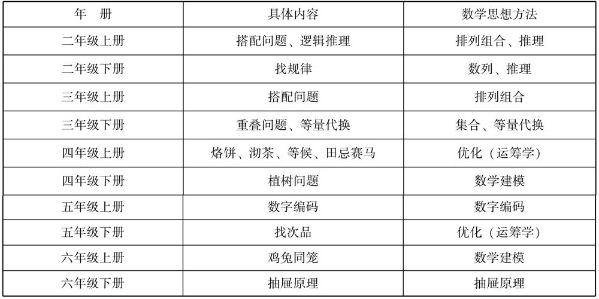
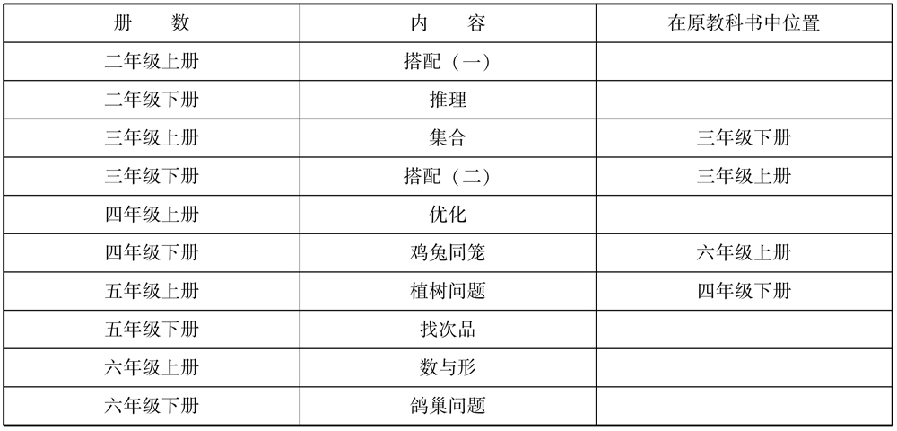

世界上没有才能的人是没有的，关键在于教育者要去发现每一位学生的禀赋、兴趣、爱好和特长，为他们的表现和发展提供充分的条件和正确引导。
——［苏联］苏霍姆林斯基
在2001年《数学课程标准》颁布之后，人教版教材除了在传统四大领域内加强数学思想方法的渗透外，还编入了数学广角系统，有步骤地渗透数学思想方法，把一些数学中最基本、最常用、最重要的数学思想方法通过学生可以理解的简单形式，采用生动有趣的、以解决学生容易接受的生活问题的形式呈现出来。不以知识和概念的掌握以及计算为目标，而重在体验通过观察、操作、实验、猜测、推理与交流等活动，初步感受数学思想方法的奇妙与作用。数学广角具体内容在每一册教材中的具体分布情况如表4.1所示。
表4.1 人教版小学数学各册教材中数学广角具体内容概括

从表4.1中可以看到数学广角的选材，其中包含了数学中很多基本的数学思想方法，体现了《数学课程标准》（2011）中重要的数学概念与数学思想，也体现了教材编排逐级递进、螺旋上升的理念。这一章将数学广角的内容，按照主要蕴含的数学思想方法进行分类，然后厘清每一个主题体现的数学思想方法和教材的编排特点，并对数学广角的内容进行分析总结。
数学广角教学内容中包括植树问题和鸡兔同笼主题，这两个主题都是典型名题、趣题，均以模型思想为核心。植树问题的模型是现实世界中一类相近事件（摆花盆、排队、爬楼梯、锯木头等）的抽象，它不仅考虑种树这条路的长度与分成的段数之间的关系，更重要的是研究不同植树情况下树的棵树与段数的关系，即可以把树的棵树抽象成线段上的点，段数就是点与点之间的线段，于是线段和点间隔排列，这种间隔的排列就是很重要的数学模型，因此数学广角虽然源于现实，但是又高于现实生活，所以在生活中有着广泛的应用价值。植树问题中由于植树的路况不同、植树的要求不同，路线被分成的段数和植树的棵数之间的关系就不同，存在着“总距离÷间隔距+1＝树的棵数、总距离÷间隔距＝树的棵数、总距离÷间隔距－1＝树的棵数”3种基本模型。鸡兔同笼是我国古代数学趣题之一，记载于《孙子算经》，原书这样叙述：“今有雉兔同笼，上有三十五头，下有九十四足，问雉兔各几何？题目中将头的个数，脚的只数都数清楚了，但是不知道鸡和兔各是多少，需要从生活经验中寻找解决的办法。鸡兔同笼问题蕴含着小学数学中重要的数学思想方法，解决这个问题的方法相当多，它的典型解法有假设法、列表法、方程法。
数学知识和数学思想方法这两条线贯穿小学数学教材。数学知识是一条明线，在数学教材中可以直接呈现出来；数学思想方法则是一条暗线，隐藏在知识的背后，需要教师挖掘和在教学中渗透。
1．植树问题体现的思想方法及分析
植树问题包含的基本的数学思想方法有化繁为简、数形结合、一一对应、数学建模等。教学目的是通过学习，学生能够运用相关的数学思想方法，从中探索规律，抽取出数学模型，然后将发现的规律用于解决实际问题，从而发展学生的思维能力。
1）尝试运用并感悟化归思想
化归思想也叫转化的思想，是指人们在遇到数学问题的时候，如果将直接运用已有知识不能或不易解决问题时，把需要解决的问题不断进行转化，最终把它归结为能够解决或比较容易解决的问题，从而使原问题得到解决的思想。
在教学例1中，给出了“在100米长的小路上种树”，当教师引导学生对“100米一共要栽多少棵树”进行探索时，学生在尝试画图时引发困惑，数字太大，全部画下来太麻烦、太浪费时间，而且如果数据更大，那么是不能够直接画完的。就在学生有所体验、产生困难的时候，借此渗透复杂问题简单化的思想。如果学生先选择研究在短距离（20米）的路上植树的情况，则会非常容易用画图的方式得到结果。在这个过程中，学生在实验中通过体验产生困难→无法解决→介绍方法→运用方法→解决问题的这个过程去感悟化归思想，将复杂的问题转化成简单的问题。
2）数形结合思想的渗透
数形结合是小学数学学习中非常重要的一种数学思想方法。数形结合思想的实质为将数与形相互转化，把抽象的数量关系转化为适当的图形，然后通过图形的结构直观地发现数量之间存在的内在联系，解决数量关系的数学问题。数形结合能不失时机地为学生提供恰当的形象材料，可以将抽象的数量关系具体化，把无形的解题思路形象化。植树问题把通过直观图形得到的模型应用到现实生活中，沟通了图形、表格和具体数量之间的联系，强化了对题意的理解和对该方法的运用。
通过组织学生在课堂上画图或者是剪贴来模拟植树的过程。用线段代表一段路，用线段上的竖线代表一棵树，每画一条竖线就表示种了一棵树。学生通过画图和观察很容易发现规律，从而可以推测出结论并迁移运用。数形结合是数学中常用的推理方法；借助数形结合的思想，将文字信息与学生基础结合起来，很好地发展了学生的思维，也有助于渗透数学思想方法。
3）一一对应数学思想的渗透
在植树问题的教学中，如果通过探究教材例子，利用画图、小棒或圆片的排列来找出规律和验证规律，再结合生活实际应用规律，就会加深学生对规律的理解和记忆。教师以这种方式进行教学时，学生似乎能够更快地记住所学的公式，但是不能灵活判断“封闭、不封闭”“两端都栽、只栽一端、两端都不栽”这些问题，更无法用数学的眼光来统领“间隔排列”的现象。如果教学中真正把握了“间隔排列”的实质：当两种物体间隔排列，那么这两种物体的排列一一对应。对应是间隔排列的本质。进而，通过“感知对应现象→感悟对应思想→建构对应思想→升华对应思想”这种层层深入的教学行为，让学生真正感知间隔排列的特点，扫清思维上的障碍，层层推进认识的完善和引申，进而避免机械记忆导致的不能灵活运用。
4）在运用中体验模型思想
《数学课程标准》（2011版）中模型思想的含义及要求：模型思想的建立是学生体会和理解数学与外部世界联系的基本途径。建立和求解模型的过程：从现实生活或具体情境中抽象出数学问题，用数学符号建立方程、不等式、函数等表示数量关系和变化规律的数学问题，求出结果，并讨论结果的意义。《数学课程标准》（2011版）进一步将这一过程简化成三个环节：首先，从现实生活或具体情境中抽象数学问题。这说明发现和提出问题是数学建模的起点。其次，用数学符号建立方程、不等式、函数等表示数学问题中的数量关系和变化规律。在这一步中，学生要通过观察、分析、抽象、概括、选择、判断等数学活动，完成模式抽象，得到模型。这是建模最重要的一个环节。最后，通过模型去求出结果，并用此结果去解释、讨论它在现实问题中的意义。
模型思想的教学不同于具体数学知识点，其不可以单独作为一个数学内容来进行专门教学，需要融入具体数学知识，通过“问题情境→建立模型→解决问题→拓展运用”的学习过程才能逐渐领悟。教材中的植树问题以“猜想试误→合作探究→发现规律（建立模型）→深化规律（再次建模）→解释运用”为主线，渗透了建立数学模型的思想方法。
模型思想需要教师在教学中逐步渗透和引导学生不断感悟。“问题情境→建立模型→求解验证”的数学活动过程，有利于学生去发现、提出、分析、解决问题，培养学生的创新意识。
2．鸡兔同笼体现的数学思想方法及其分析
鸡兔同笼是我国民间广为流传的数学趣题，通过对它的学习，我们能够体会到解题策略的多样性以及其中蕴含的丰富的数学思想方法。
1）化归思想
化归是基本而典型的数学思想，前面对其已有介绍。我们在解题中应用到的将未知化为已知、将复杂化为简单、把曲化直等都是这一思想方法的运用。鸡兔同笼同植树问题一样，原题中的数据比较大，学生探究不方便，因此根据化繁为简的思想，先把数据改编成较小的，比如，笼子里有若干只鸡和兔。从上面数，有7个头，从下面数，有18只脚，那么鸡和兔各有几只？当学生学习掌握了此类问题后，教材中提供的题目会得到很好的解决。与鸡兔同笼类似的问题在生活中有很多，比如龟鹤问题、桌凳问题、确定最大运力、做对多少题目等，相关问题都可以先通过化归的方法，将其归结为鸡兔同笼问题，再得到解决。
2）枚举思想
枚举思想是一种朴素的思想方法，又是一种实用的解决问题的策略。用枚举思想解决问题就是逐个找出可能符合问题的答案，并用一些表格、图标等简单明了、便于记录的形式将其进行整理，从而找到问题的答案。学生在刚接触鸡兔同笼问题时，一般很难理解列式计算。不过在数据很小的时候，学生往往会凭着直觉经验去假设和猜想，实际上就是用枚举思想（即一一列举）来解决问题。一般地，按从大到小或从小到大依次枚举，可以避免疏漏或重复，还有学生会根据经验从最接近的开始试，不断地优化枚举的方法，这样可以节约很多时间。此方法常常借助于列表来及时记录每一种可能的结果。例如前面讲到的鸡兔同笼问题，就应用枚举思想并借助了列表来记录得到：鸡有5只、兔有2只。
| 鸡/只 | 1 | 2 | 3 | 4 | 5 |
| 兔/只 | 6 | 5 | 4 | 3 | 2 |
| 脚/只 | 26 | 24 | 22 | 20 | 18 |
3）数形结合思想
在教学鸡兔同笼问题时，当数据较小时，采用画图的方法来解决。例如解上一题，用○表示头，用∣表示脚，先画7个头，如果每个头下都画上2只脚，数一数，共有14只脚，比题中给出的脚数少了4只，因此再2只脚2只脚地添，添2次，脚刚好18只，这样便得到笼中有5只鸡和2只兔。也可以先在每个头下画上4只脚，结果比题中给出的脚数多了10只脚，再2只脚2只脚地划去，划5次后，脚的数刚好是18只，得到相同答案，这一方法是列式子解决的基础，很好地理解数形结合的思想方法有助于对所列式子的理解。
4）假设思想
假设是一种重要的数学思想方法。假设法就是先假定一种情况或结果，然后去推导、验证来解决问题的方法。合理运用假设法，有利于问题的解决和培养学生的逻辑思维。
用假设法教学鸡兔同笼主要有两种思路，可以假设笼子里全部都是鸡或者全部都是兔，再计算题目中的与假设情况下总脚数之差，最后再通过数形结合思想，推理出鸡和兔各有多少只。同样解决上一个题目，可以假设7只全部都是鸡，那么兔有（18－7×2）÷（4－2）＝2（只），鸡有7－2＝5（只）。运用假设法解题是教学的难点，学生理解起来有困难，因此可以先通过上述的画图法在直观操作活动中建立思维的表象，再进一步抽象，这样有助于学生真正理解假设法。同时，抬脚法也是应用假设的思想。
5）方程思想
根据问题中的已知数和未知数之间的等量关系，在已知数与未知数之间建立一个等式是方程思想的由来。在鸡兔同笼的问题中，可以将鸡或兔中任意一种假设为X 只，然后根据鸡、兔的只数列出鸡脚和兔脚的只数与脚的总只数的关系式。比如，假设兔有X 只，那么鸡有（7－X ）只，可列方程：4X +2（7－X ）＝18，解得X ＝2，于是鸡有7－2＝5（只）。方程解法思路比较简单，且具有一般性，教学中要突出方程解法的优越性，不断渗透方程思想。
6）模型思想
对数学研究对象的某些特征进行想象，并将其用数学语言、图形或模式表达出来，建立数学模型。当解决了鸡兔同笼这个具体问题之后，可以引导学生观察、思考，以概括提炼出解题模型：兔的数量＝（实际的脚数－鸡兔总数×2）÷（4－2）；鸡的数量＝（鸡兔总数×4－实际的脚数）÷（4－2）。之后再通过应用加深理解和拓展该模型，把鸡与兔换成其他动物或者物品，变式为其他问题，通过这些问题与鸡兔同笼的联系，鸡兔同笼便成为这些问题的模型，应用该模型解决问题，并不断促进模型的内化。
1．植树问题的编排与教学要求
1）编者意图
数学广角单元的目的是向学生渗透一些重要的数学思想方法。四年级下册的“数学广角——植树问题”编排了3个例题，主要渗透了有关植树问题的一些思想方法，它们也是常用的数学思想方法。编者通过现实生活中一些常见的实际问题，让学生通过探究能够从中发现一些规律，抽取出其中的数学模型，然后将发现的规律用在生活中解决一些实际的问题。
在植树问题中，植树的路线可以是一条线段，也可以是一条首尾相接的封闭曲线（如长方形、三角形或圆形等）。而关于一条线段的植树问题也可能有不同的情形（如两端都要栽、只在一端栽另一端不栽或是两端都不栽），编者安排了相应的3个例题。植树问题教学内容的目的不是教会学生机械地掌握相关公式和模型，而是通过学生亲身体验探索建立模型的过程和感悟数学思想方法。教师要引导学生通过观察、猜测、实验、推理等活动，初步体会解决植树问题的思想方法，培养学生从实际问题中探索解决问题有效方法的能力。在观察、猜测、实验、推理等活动中积累基本的数学活动经验。
2）教学分析
从教材中可以看到，例1是两端都植树的情况，例2是两端都不植的情况，例3是在封闭图形里植树的情况。教学中要求学生通过对例题的学习掌握3种不同情况的计算方法，渗透数学思想方法，发展学生式思维能力，拓展学生对数学的认识，感受到数学在生活中的广泛运用。
在平时的教学实践中，以上内容一般分成4个课时完成。有的教师在第一课时探究一条直线上的3种情况，第二课时接着练习巩固，第三课时教学封闭图形植树的情况，第四课时进行总体的练习；有的教师设计第一节课只教学例1，让学生充分了解植树问题的方法，扎实地掌握其中的概念和相关的数量关系，第二课时教学在直线距离上种树的其余两种情况，第三课时教学封闭图形上植树的情况，且做到与第二课时只植一端的情况建立很好的链接，第四课时进行总体的练习。通过教学，学生都知道植树问题的3种情况：以加1，减1或者是不加不减的方法进行计算，但是在做题过程中不太理想。
因此，为了真正做到不死记硬背公式、渗透数学思想方法，在教学中可以从以下几点入手：经历解决问题的过程；体会基本的数学思想；感受转化的思想方法；积累基本的活动经验。
教学建议如下：
（1）教学要点：
①直线型植树问题（包括两端都栽、一端栽、两端都不栽3种情况）；
②封闭曲线型植树问题。
（2）具体教学建议：
①深入理解间隔、间隔数等概念；
②引导学生合情猜测、探究渗透数学思想方法；
③运用线段图、示意图等帮助学生直观地理解；
④引导学生学会从简单到复杂，举一反三，熟练掌握。
因此，在教学数学广角时，应该注意培养学生应用数学思想方法解决问题的意识和能力，学习在问题解决之后进行“反思”，从而体会数学思想方法的应用价值。比如，可设计由植树问题变式的各种生活中的问题，包括装路灯问题、上楼梯问题、锯木头问题、排队问题等，通过在这样的类似问题的解决中应用和感悟植树问题的思想方法。
在植树问题的教学中，虽然体现了很多的数学思想方法，但是不要把植树问题内容的核心思想理解为数形结合思想或一一对应思想，植树问题核心的思想方法是数学模型方法，即我们要按照“建模→求解→应用”三个步骤进行教学。教师认识的偏差，会影响教师采用的教学方法和手段，也势必会影响教学质量。
1．鸡兔同笼的教材编排与建议
1）编者意图
鸡兔同笼问题能够流传至今并选进教材，自有它独特的地方，它有数学文化价值和很强的趣味性。教材生动地呈现了在《孙子算经》中记载的鸡兔同笼问题，这一素材的选用，说明了我国的数学历史渊源流长，体现了所学数学内容的文化价值。教材的例1从数据较小的问题入手，便于学生从猜测到用假设法和列方程的方法解决问题的探究过程，同时体现了解决鸡兔同笼问题的不同思路和方法。为了拓宽对鸡兔同笼问题的认识，明确其在生活中的应用，练习中安排了龟鹤问题以及生活中的一些实际问题等，让学生进一步体会到这类问题在日常生活中的应用，并巩固用假设法或列方程的方法来解决这类问题。
2）教学分析
教材优先编排数据较小的例1，有利于学生自主探索解决该问题的各种方法，然后再解决《孙子算经》中数据较大的原题。教材还接着展示了枚举法、假设法、列方程的方法，以便学生灵活运用和选取。
在实际的教学中，教师们大多数会根据实际的情况选取适合的解题方法，一般以选取假设法的居多，且一般会假设全部是兔子或者全部是鸡的情况，然后通过计算得到鸡兔各自的数目；还有一些教师会直接用列方程的方法来解决问题。教学的结果是多数学生只会模仿解题，当换了一个情景之后就不能够正确解答，即真正理解的学生仍占少数。
教学建议：
（1）教学要点：
①能运用猜测、列表、逼近等方法解决简单的鸡兔同笼问题；
②在理解了①的基础上，能用假设或列方程等方法解决鸡兔同笼问题。
（2）具体教学建议：
①引导学生学会从简单问题入手解决问题；
②用假设法解决问题，重在分步点拨、主动探索，而不是直接告诉列式计算；
③用方程解决问题重在让学生学会如何建立等量关系。
数学广角强调体验和抽象的过程，呈现的问题更具有开放性和挑战性。在解决问题的过程中，学生不能依靠简单的模仿和记忆，而是需要积极思考，不断对信息进行加工和处理，通过观察、操作、猜想、实验、抽象等一系列的数学活动使他们在提高数学思维水平的同时，体会到一些重要的数学思想方法。
统筹学是数学与社会科学交叉的一个学科分支，以如何在实现整体目标的全过程中施行统筹管理的有关理论、模型、方法和手段为研究目的。它通过对整体目标进行分析，选择适当的模型来描述整体的各部分、各部分之间、各部分与整体之间以及它们与外部之间的关系和相应的评审指标体系，进而综合成一个整体模型，用以进行分析并求出全局的最优决策以及与之协调的各部分的目标和决策。小学数学教材主要涉及运筹学中的统筹、排队与对策等基本问题。在小学数学教材四年级上册安排了4个例题，例1～例3为与统筹安排相关的知识，目的是渗透运筹的思想，例4主要是对策论方法的学习和应用。
运筹学的思想用一句话概括就是，依照给定条件和目标，从众多方案中选择最佳方案。运筹学的产生来自于现实生活，开始是战争中如何减少损失、怎么样增加战争的胜算，逐步地发展到在工厂、企业、生活方方面面的运用。它主要包括数学规划（线性规划、整数规划、目标规划、动态规划）、图论、存储论、排队论、对策论、排序与统筹方法以及决策分析。
排队论（Queuing Theory），亦称随机服务系统理论，是数学运筹学的分支学科，是专门研究带有随机因素，产生拥挤现象的优化理论。排队论研究的内容有3个方面：
（1）系统的性态，即与排队有关的数量指标的概率规律性；
（2）系统的优化问题；
（3）统计推断，根据资料合理建立模型。
排队论的作用是正确设计和有效运行各个服务系统，使之发挥最佳效益。其广泛应用于电话交换网、计算机网络、生产、工程管理、运输、公共服务、库存等各项资源共享的随机服务系统。
统筹方法，是一种安排工作进程的数学方法。它的作用是把工序安排好，避免窝工，缩短工作时间，提高工作效率。比如，沏茶、田忌赛马、阿波罗登月计划等都是统筹方法的运用。统筹方法的适用范围极其广泛，在企业管理和基本建设中，以及关系复杂的科研项目的组织与管理中，都可以应用。
博弈论又被称为对策论（Game Theory），既是现代数学的一个新分支，也是运筹学的一个重要学科，通俗地讲，就是双方在平等的对局中各自利用对方的策略变换自己的对抗策略，以达到取胜的目的。博弈论思想在古代就有，比如，中国古代的《孙子兵法》不仅是一部军事著作，而且算是博弈论著作的典型代表。博弈论最初主要研究象棋、桥牌、赌博中的胜负问题，人们对博弈局势的把握只停留在经验上，没有向理论化发展。
运筹思想和博弈论的理论都是比较系统、抽象的数学思想方法，安排在四年级上册学习，只是让学生通过简单的事例，初步体会运筹思想和对策方法在解决实际问题中的应用，初步培养学生的应用意识，提高学生解决实际问题的能力。
1．编者意图
运筹学从产生到现在已经有了非常广泛的用途，已经渗透到物流、库存、资源配置、生产、管理等各个方面。运筹思想的应用具有广泛性，所以有必要在小学阶段就渗透优化的意识和统筹安排一些简单的思想方法，以帮助学生感受数学在生活中的运用，同时让学生尝试能够用数学方法来解决生活中的实际问题，合理安排自己的生活、学习。从教材的编排可以推测出编者希望学生能够通过自主安排，计算各种策略的时间并分析各策略的优劣，从中体会到优化的意识和作用，初步拥有优化意识。
博弈论是研究竞争双方能够战胜对手的策略，以耳熟能详的“田忌赛马”的故事让学生从中体会博弈论在实际生活中的运用。从教材的设计看，不难推测教学的目的是让学生思考田忌所用的方法是否是唯一能赢的方法，学生通过列出各种策略，然后一一地列举质疑，从中体会到博弈的重要性。
2．教学分析
从教材中的4个例子看，例2和例3是学生在生活中有所经历的问题，都是运用统筹方法解决问题的经典例子，重点在于引导学生应用数学知识解决实际问题，并能从数学的角度科学、客观地分析研究，寻找最优方案，体会优化思想，培养优化意识。一般教学步骤是运筹学的一般研究方法：规划研究对象（找到事件和先后顺序）→确定研究方法（构建模型、列举）→策略分析选择。例1的教学关键是找到用12分钟烙3张饼的不足，即锅有空闲的，启发学生思考，探究找到最节约时间的办法就是要保证锅没有空闲，最后是总结出规律，在这个案例的教学中最重要的是理解烙饼的方法原理和掌握不重不漏的烙饼方法。例4的教学主要是博弈论思想的渗透与运用，引导学生通过周密的思考和分析，在已有的条件下，经过筹划、安排，找到一个最好的方案，找到解决问题的最优策略，发展优化的意识，体会博弈论的价值。让学生根据信息进行分析和决策并找到“制胜点”是最为困难的，根据教材特点和学生存在的生活经验和多元思考方式缺乏等情况提出以下教学要求：
（1）教学要点：
①掌握运筹学中比较简单的知识；
②学会从几种不同的方案中，选择最优化的方案。
（2）具体教学建议：
①有效结合排列组合思想及统计方法教学；
②引导学生思考是否有优化的可能，在此基础上找出最优的方案；
③运用卡片、图画、表格进行活动体验等。
四年级上册编排的运筹思想和博弈论都是比较系统、抽象的数学思想方法，教材中的案例是为了让学生通过简单的事例，初步体会运筹思想和博弈论在解决实际问题中的应用，初步培养学生的应用意识，提高学生解决实际问题的能力。学生只要能从解决问题的多种方案中寻找出最优的方案，初步体会优化思想的应用就可以了，并不要求学生一看到问题就能从优化的角度给出最优的方案。教师在教学中也不要使用运筹、优化和博弈等数学化的语言进行描述。
排列组合的思想随着人类计数的需要而产生，早在中国古代的《易经》、日月天干、五行等就运用了排列组合的思想将物体进行各种排列。集合思想是数学中最基本的思想，学生在早期学习数学时就已经开始运用集合的思想方法，集合数学思想方法有着广泛的运用，是以后进一步学习数学的基础。它能够发展学生的逻辑思维。这一教学内容编排在小学二年级上册和三年级上册的数学广角中，主要的目的是培养学生有序思考的意识，通过观察、操作等方式找出简单事物的排列数与组合数，并能够不重不漏地记录下来。
集合数学思想方法是培养学生的逻辑思维能力的良好方法。集合数学思想方法能够培养学生观察、操作、猜测、推理的能力，让学生初步感受数学思想方法的奇妙与作用，受到数学思维的训练，逐步形成有序的、严密的思考问题的意识。
数形结合帮助学生感悟集合思想。集合是一个非常抽象的概念，因此教科书注重借助维恩图表示集合及其运算。经常用平面上封闭曲线的内部代表集合，这种图被称为维恩图。维恩图这种表示方法能够直观、形象地表明集合的意思。所以，我们可以借助维恩图帮助学生理解集合的知识，让学生掌握画维恩图的方法。
1．编者意图
排列组合知识要到高中二年级才开始深入学习，安排小学阶段的排列组合内容的目的不是让小学生学习排列组合、分类计数原理等深奥、系统的数学知识，而是培养学生用数学的眼光观察生活的意识和有序思考的能力。小学生的特点是善于模仿一些直观和符号化的事物，因此选取这一素材通过画一画、摆一摆、连一连等实际操作方式，让学生从中体会到全面、有序地思考问题的方式。
2．教学分析
在教材内容上，二年级和三年级的教学内容都采用了排数字卡片的方式学习排列；通过握手、安排比赛、照相等学生生活中有体验的实例学习组合。二年级的数学广角中通过1个例题学习排列，组合的知识则编排在练习中；三年级安排的3个例题分别为组合、排列、组合。针对以上情况，教师们对这些例题的处理方式主要有：
（1）有的二年级教师会安排2～3个课时。其中，例子占用一个课时，将编排在练习里的组合知识以例题的形式在新课里进行讲解，比如课题就叫作握手问题，也有的教师会将组合的知识在练习中直接讲解。
（2）三年级的教师在进行相关教学内容安排时会有以下几种方式：一些教师会按照例题的顺序分3个课时直接教学，有的老师则把例1和例3关于组合的例题在一节课内教学，将例2单独教学。不管采用什么样的形式，最主要的是要围绕着有序思考和解决问题、借助简单的符号、最直观的方法表示出思考的过程。对于如何把握教学的度，使该部分内容在授课时具有数学味的同时，又在学生的最近发展区内，编者在此提出以下建议：
（1）二年级上册教学要点。
①两个数或物品的排列。从3个数或物品中选1个或2个的组合，应用相应的乘法原理。
②得出的排列数或组合数要保证既不重复也不遗漏。
（2）三年级上册教学要点。
①3个数或物品的排列。从4个数或物品中选1个或2个的组合，应用相应的乘法原理。
②应学会有序地思考问题，例如，引导学生拼摆、连线、思考、交流。
③多采用学生身边的实物作为素材，如卡片、衣物、文具等。
④不能提出排列组合等概念。
⑤可以不要求学生列式计算。
总而言之，对于二、三年级上册数学广角有关内容的教学，应先创设一个学生熟悉的情境，再提出问题，探究方法；然后对问题进行变式，进一步加深学习体验；最后提出拓展的问题。在解决问题的过程中，要注意让学生经历从操作活动过渡到数学符号表示问题的全过程，并上升为基本活动经验，由此学生会初步感悟到“分步计数原理”：做一件事，可以分为几步，每步又有若干种方法，将其相乘可以得到结果（这就是该节课中总结出来的数学模型），再通过小结将其总结出来，顺利完成教学任务。
要防止把数学广角当作奥数培训课进行“英才”教育，它需要更多地、有计划地创设实践活动，让全体学生去观察、研究、尝试，重在活动中对思想方法的感悟；注重活动，在活动中还应该尽可能地将感悟到的数学思想方法归纳出来，用学生能理解的语言总结成数学模型。同时，教师在教学中不要使用学生还不能理解的专业术语。
重叠问题是安排在人教版小学数学教材三年级下册的数学广角内容，具体编排在例1的教学中。
重叠问题的思想实质上是集合并集和交集的运算思想。集合是高中一年级开始学习的内容，是一个非常抽象的数学概念，主要通过维恩图表达集合思想。
集合思想是数学中最基本的思想。集合思想不仅有着广泛的应用，而且是今后进一步学习数学的基础，是培养学生逻辑思维能力的良好素材，有助于学生培养自身观察、操作、猜测、推理的能力，初步感受数学思想方法的奇妙与作用，受到数学思维的训练，逐步形成有序、严密思考问题的意识。
数形结合可以帮助学生感悟集合思想。集合是一个非常抽象的概念，因此教材中涉及的内容注重借助维恩图表示集合及其运算。经常用平面上封闭曲线的内部代表集合，这种图被称为维恩图。维恩图这种表示方法能够直观、形象地表明集合的意思，所以教师要善于借助维恩图帮助学生理解集合的知识，并让学生掌握画维恩图的方法。例如，在维恩图中填出每个集合的元素，体会集合元素的特性；用画图的方法表示出两个集合的交集；借助维恩图体会集合的包含关系等。
1．编排意图
重叠问题在小学的学习主要是要经历维恩图产生的过程，感受集合的思想。由于重叠问题的实质是集合知识中的交集问题，但是在小学阶段不能用抽象的集合语言进行教学，因此编者给出了重叠问题这一标题，便于直观理解和记忆。
该内容编排在三年级下册数学广角的例1，为了渗透集合思想，编者选取了统计语文小组和数学小组的人数作为问题情境。首先是统计表，学生能够从中读出参加语文小组的有8人，参加数学小组的有9人。但是实际上参加语文和数学小组的总人数不是17人，进而引发了学生的认知冲突。为了能够表达这两组人的关系，编者利用了维恩图。从图上可以清楚地看出，有3个同学既参加了语文小组又参加了数学小组，不过在计算总人数的时候只能计算1次，最后总结出了计算总人数的方法。所以，重叠问题的教学编排以学生自主探索、构建维恩图、读懂文恩图、体会集合思想、找到解决问题方法为主线。
2．教学分析
虽然学生在学习该内容之前就已经运用、体验过集合思想，但是该内容都是以单个的圈来呈现的，如在学习分类问题时就曾涉及将相同的物品放到一个圈里的问题，这些是该节课教学的基础。此时，这部分内容不再是用一个圈表示集合，而是学习交集的几何图形，因此必须让学生体会到要表达既参加语文小组又参加数学小组的这种重叠现象，就必须把两个集合圈进行交叉，完成维恩图的建构。达到这一目的之后，要认识维恩图，理解维恩图中每一部分的意思，这非常重要，因为只有了解了维恩图每一部分的意义，才可能正确地掌握重叠问题中涉及的数量关系和计算方法。这一内容的教学出现的最大问题是：虽然学生很容易就能模仿计算的方法，但是过几天之后会完全不知道题目里面表达的数量关系是什么。对学生来说，理解既做什么又做什么也就是“重叠”，是非常困难的事，他们不知道为什么要减去重叠部分。所以，在讲授该部分内容时，列式不是主要的目的，对重叠的理解和对维恩图各部分的认识才是最关键的。维恩图比较抽象，因此最好从学生的生活实际出发，引发学生的认知冲突，让学生亲自感受到重叠，找到表示重叠的方法，并能够很好地理解和运用该方法。
教学建议：
（1）教学要点。
①用集合的相关知识解决简单的实际问题；
②学会用维恩图表示交集、并集等。
（2）具体教学建议。
①要和统计的教学结合起来；
②多采用图画的形式，多用维恩图，少用直接计算的方式得出结果。
等量代换的内容编排在小学数学教科书三年级下册数学广角例2的教学中。
等量代换是指一种量用与它相等的其他量去代替。等量代换是数学中的一种基本思想方法，是代数思想方法、方程思想方法的基础。狭义的等量代换思想用等式的性质来体现，就是等式的传递性，如果a ＝b ，b ＝c ，那么a ＝c 。等量代换的理论是比较系统、抽象的数学思想方法，放到小学教材内具有重要的意义。
三年级下册的数学广角编排的例2，利用天平的原理，通过简单问题的解决，在操作、推理、验证和交流等活动中初步体会这种思想方法，为后继学习打下必要的基础。通过学习此部分内容理解等量代换的意义、等量代换的方法、等量代换的思想是最主要的意图。
1．编排意图
三年级下册数学广角例2，编排了等量代换，为学生的推理能力和逻辑思维的发展提供了直接素材，是感受数学思想美丽的沃土。在编排的例子中通过一些简单问题的解决，学生能够初步体会到等量代换的思想方法，能够为以后代数知识的学习打下基础。
2．教学分析
例2通过天平原理的运用，让学生从中体会到等量代换的思想方法。根据天平的原理可知，当两边的物体一样重的时候天平会平衡，从教材编排的第一个图中可以看到一个西瓜重4千克，从第二个图中可以看到4个苹果重1千克，小精灵则提出思考：一个西瓜和多少个苹果同样重？因为等量代换概念较抽象，所以一般不直接告诉学生用等量代换，而是通过天平上的砝码，引导学生思考：一个西瓜同4千克砝码等重，那4千克砝码和多少个苹果等重？再引导学生找到如果第二个图中天平的右边变成了原来的4倍，那么左边也要变成原来的4倍，天平才会平衡。教学这一内容主要是要让学生的思路清晰，避免机械的模仿，用乘法算式解决问题。
教学建议：
（1）教学要点。
①根据天平或语言叙述，知道哪些量是相等的；
②三个量中和同一个量相等的另外两个量相等；
③相等的两个量，同时乘或除以相同的数还是等量；
④根据③可以得出单倍量或多倍量的等量是多少；
⑤由两组等量关系推出第三组等量关系。
（2）具体教学建议。
①观察、思考、交流；
②操作图片、学具等；
③运用多媒体演示。
抽屉原理有时也被称为鸽巢原理（如果有五个鸽子笼，养鸽人养了6只鸽子，那么当鸽子飞回笼中后，至少有一个笼子中装有2只鸽子）。它是德国数学家狄利克雷首先提出的并被用以证明一些数论中的问题，因此也被称为狄利克雷原理。它是组合数学中一个重要的原理。抽屉原理的一般含义为：
（1）如果把多于n 个的物体放在n 个盒子里，则总有一个盒子至少有2个物体；
（2）如果把多于mn 个的物体放到n 个盒子里，则总有一个盒子里有至少m +1个物体；
（3）如果把无穷多个物体放入n 个抽屉，则至少有一个抽屉里有无穷个物体。
1．猜想验证（推理思想）
猜想验证是数学教学中重要的思想方法，这在新课标实施的今天，显得尤为重要。在该教学内容（例3）里，教师采用一个不透明的盒子装着不同颜色的球，晃动几下，让学生猜一猜摸出一个球会是什么颜色，接着就从盒子里摸出球给大家看看，再问如果盒子里有红色、蓝色的球各4个，那么再摸出一个球可能是什么颜色？通过这些猜想再去验证，让学生尝试解题、发展思维。
2．数学建模
数学模型思想是指对于现实世界的某一特定对象，从它特定的生活原型出发，充分运用观察、实验、操作、比较、分析综合对过程进行概括，最后得到简化和假设，它是把生活中的实际问题转化为数学问题模型的一种思想方法。这就要求教师在教学中引导学生建立数学模型时，不但要重视结果，更要关注学生自主建立数学模型的过程。在这一教学中，主要通过探究性学习建立数学模型。比如在对例3的学习中，如果要保证学生摸出的2个球的颜色是相同的，则最少要摸出3个球。但是这样的方法太麻烦了，便引导学生找到更简单的办法，学生往往会找到：“2种颜色的球先各摸一个，摸出了2个颜色，再摸第3个就保证摸出的球中有2个是同色的。”于是，教师便可以建立这样的数学模型：（ ）÷2＝1…1。除数“2”表示颜色数，商“1”表示先摸的个数，比颜色数少1，余数“1”表示再摸的个数。接着进行类似的摸球活动，不断地强化理解，让学生经历把简单的实际问题加以“模型化”的过程，并有意识地让学生理解“抽屉问题”的一般化“模型”是用“有余数除法”这一形式表示出来的。解说摸球的过程体现了数学证明，这让学生初步经历了“数学证明”的过程，让学生建立抽屉原理的数学模型，使学生感受数学的魅力。
1．编排意图
六年级下册安排的数学广角的教学内容为抽屉原理，其目的是渗透一些基本的思想方法。教材根据学生的思维特点有意识地安排了3个例题：例1通过枚举法、反证法、假设法介绍和解释了简单的抽屉问题；例2从例1的简单理解过渡到能用算式说明，并建立了抽屉原理的一般模型；例3在例1和例2的基础上加强了理解，通过逆向思维的训练，培养学生反向推理的能力。关于这类问题，学生在现实生活中已积累了一定的感性经验。教学时可以充分利用学生的生活经验，放手让学生自主思考，先采用自己的方法进行证明，然后进行交流。在交流中引导学生对枚举法、反证法、假设法等方法进行比较，让学生逐步学会运用一般性的数学方法来思考问题，发展学生的抽象思维能力。在知识方面，教学的重点是抽屉原理的“一般化”模型，即“物体数÷抽屉数＝商…余数”，而总有一个抽屉中至少的数量是商与1的和，并能迁移运用该模型。
2．教学分析
由于抽屉原理本身的难度较大，而且学生容易对概念认识不清，因此教师对此部分知识的呈现方式与教学尺度的把握显得尤为重要。要达到较好的教学目的就要从学生的生活经验出发，注重对存在性、至少等关键词的理解，通过体验让学生自己学会运用这些关键词，让学生从这些词汇的运用中体会到数学语言的规范性、必要性，真正理解相关的意思，而非采用记忆公式、模仿做题的方法。通过探索，学生能体会到抽屉原理是对物体存在性的一种极限描述。从教材的编排上可以感受到教学的尺度，教材对“抽屉原理”标准的描述和对“构造抽屉”类型的应用均有淡化，因此在实际的教学中也会淡化相关的内容，教学的目的是学生能够认识即可，不需要严密的证明和说明。
教学建议：
（1）教学要点。
①把m 个物体任意分放进n 个空抽屉里（m ＞n ，n 是非0的自然数），那么一定有一个抽屉中放进了至少2个物体；
②把多于kn 个物体任意分放进n 个空抽屉里（k 是正整数），那么一定有一个抽屉中放进了至少k +1个物体；
③关于抽屉原理的逆向思维的问题；
④通过实验数据说明抽屉原理；
⑤通过假设来证明抽屉原理；
⑥会用有余数的除法解决有关抽屉原理的问题。
（2）具体教学建议。
①注重引导学生从形象思维向抽象思维过渡；
②引导学生在解决实际问题时会运用抽屉原理，特别是会分析什么是抽屉，什么是待分的物品；
③不注重让学生概括抽象的抽屉原理，就事论事说明即可；
④不倡导一开始就让学生学会用有余数的除法解决抽屉原理问题。
对有些主题不能够进行很明确的归类，因此将它们总结在一节之内，主要包括数字编码和找次品。
根据《现代汉语大辞典》解释，编码就是用预先规定的方法将文字、数字或其他对象编成数码，或将信息、数据转换成规定的电脉冲信号。编码在电子计算机、电视、遥控和通信等方面使用广泛。编码是信息从一种形式或格式转换为另一种形式的过程。解码是编码的逆过程。
1．编码的常见方法与思想分析
五年级上册数学广角编排的数字编码内容是要向学生渗透编码的思想。在日常生活中，数的应用非常广泛，不仅可以用来表示数量和顺序，还可以用来编码。本内容的目的就是通过邮政编码、身份证号码、电话号码等和我们生活紧密相关的内容，介绍蕴含在其中的数字编码思想。运用数字或者符号来描述事物，可以比较简洁、准确地表示出事物蕴含的客观规律，同时便于统计和查询。
2．教材编排与教学要求
1）编排意图
这一内容的学习，教材编排了4个例题，其教学的重点是通过观察、比较、猜测，让学生体会数字编码的思想和探索数字编码的简单方法，学会运用数字编码的数学思想方法。基于学生的生活经验，教材在内容的安排上从教师点名的情境入手，接着编排了例1和例2，通过邮政编码和身份证号码实例来教学，接着例3和例4则运用编码的思想方法解题。其目的是在学生的生活经验和知识基础上，培养学生的数学思想，让学生体会数字编码思想和能简单地进行编码；同时，运用生活中最常见的邮编、身份证号码、电话号码为学习提供便利。
2）教学分析
学生在生活中已经有了一定的生活经验，怎么样运用好这些生活经验，怎么样把这部分课上出数学味，怎么样渗透抽象的数学思想方法是教师们要思考的问题。从教材的编排看，这一内容有4个例题，例1和例2涉及的是学生熟悉的邮政编码和身份证号码问题，目的是让学生体会数字编码在生活中的运用，了解邮政编码的结构与含义，了解身份证号码中蕴含的一些简单的信息和编码的意义。例3和例4是在前面例题学习的基础上，通过活动来运用数字编码的思想方法，加深对数字编码思想的感悟（例3是给学校学生编号；例4是给图书编号，例4的教学要难一些，因为它要用符号和数字的组合进行编码）。该内容的学习不仅是认识数字编码，而且是编码思想的渗透、编码方法的探索，但是不要求学生掌握编码中每一个数字的信息和含义。关于编码的方法，教师可以允许学生用不同的形式，重在让学生自己体会。
教学建议：
（1）教学要点。
①认识到数字可以编码；
②体会数字编码应用的广泛性；
③数字编码是有规律的；
④数字和符号的组合也可以编码；
⑤根据实际情况，制作有个性的简单编码。
（2）具体教学建议。
①引导学生学会运用调查、搜集、整理等方法获取相关的数据信息；
②适当补充一些相关的资料，开阔学生的视野；
③鼓励学生大胆猜测、实验验证、合作交流、动手实践；
④防止将课上成单纯的科学常识课或实践活动课；
⑤要让学生感受到数字编码应用的广泛性并探索数字编码；
⑥学生在课堂教学中将感受数学的趣味性、欣赏数字编码的数学美、制作个性数字编码的过程有机地结合起来，确实做到知识与技能、数学思考、解决问题、情感与态度教学目标的全面落实。例如，让学生从身份证号中感悟数字编码的思想后，可用课件展示一组生活中常见的邮编、房牌号、公交站牌、车牌号、银联卡、积分卡等编码，在具体的情境中用编码的思想去解读这些信息，引导反思这些编码的特点，体会在生活各个方面中编码思想的应用价值。还可以引导学生“给自己编个个性的学号”“给宾馆房间编号”“巧用身份证号破案”等情境来动手设计编码，在反复实践应用中让学生感受数字编码的思想方法和该思想方法的实践应用价值，以及培养学生以后遇到类似问题能主动应用编码思想的意识。
五年级下册数学广角编排的内容为找次品，涉及的例题都是在已知次品为较轻或者较重的情况下排查寻找，降低了找次品的难度。
1．找次品的方法与思想分析
通过找次品的学习，学生可以通过推理和抽象找到这类问题的最优策略。找次品也体现了化归思想和化繁为简的数学思想。
2．教材编排与教学要求
1）编者意图
找次品对学生而言是一个非常困难的内容，教材的编排主要是通过学生自己实践、小组讨论和探究等教学方式，即让他们充分地操作、实验、讨论和研究，找到各种解决问题的办法和体会最优策略，教学的重点是活动之后的归纳和推理，并在此过程中找出最优策略。教材中只安排了两个例题。例1利用天平找出5件物品中的1件次品，目的是初步感受这类问题和解决问题的方法，主要是通过合作和讨论经历找次品的过程来体会解决问题策略的多样性。例2是用天平找出9个物体中的1个次品，这个例题选择9个物体作为研究对象的原因是与例1做到了承前启后的作用，9个物品中找一个次品也是通过2次就能保证找到，且9个物品利于学生采用不同的称量方案，利于学生在对比中总结出一般的思路和体会解决问题的最优策略。在教科书中，小精灵还提出：在10个和11个物品里找次品该怎么秤？这给学生提供了广阔的探索空间。
2）教学分析
在现实生活中，找次品的情况很复杂，比如外观、材料等不符合标准，而教材中要找的次品是外观相同、质量有差异，而且是从一堆物体中找出一个特定的次品。教材选取这样特定、简单化的材料是希望学生通过这样的学习获得解决问题的办法，培养其解决问题的能力与意识。而且，在教学中学生可能会不理解分的办法和原因，不能够意识到“把待测物品平均分成3份来称最好”，尤其当物品不是3的倍数的时候就更困难了。所以，学生在学习之后还是会有思路和方法上的混乱这个问题，很难找到要怎么分才是最好的。在教学这部分内容时，有的教师会按照教材的两个例题分两个课时教学，有的教师会一个课时教学新课，一个课时讲练习，也有的教师会在教学的过程中增加分别在2个、3个、27个、81个物品里找一个次品的练习，接着会有在9～27个物品中的任意个数找次品的情况，加深学生对平分为3份的理解和增强结论的概括性，但是教学的结果不是很理想。因此这一课的教学一定要注重让学生自己探索，让学生通过有序的思维、合理的方法找到找次品的最好方法，因为如果只是强硬地告诉学生结论，学生可能会无法理解和运用。
教学建议：
（1）教学要点。
①在找次品的过程中，能从多种方案中找到最优方案；
②知道如何用1～3次就能保证找到次品的方案。
（2）具体教学建议。
①鼓励学生用个性化的方法去找次品，在比较中优化方法；
②结合统计教学；
③引导学生采用观察、模拟实验、表格、验证等方式方法。一定要注意，教学不是简单地“告诉”，很多老师采用简单地“告诉”学生的方法。例如，有位教师在讲授此部分内容时，就明确告诉学生：“先将要找的产品分成3堆，而且要尽可能地平均分，3个称一次，9个称2次，27个称3次……”。这种方式是不正确的，这种避开活动过程“从繁就简”的做法，如同蜻蜓点水般浅尝辄止，无法让学生体验数学思考（为什么要这样分呢？）。学生没有经历过，没有活动经验，就谈不上教学效果。这种舍本逐末的做法显然不可取。
经过对数学广角教学内容的梳理，数学广角的教学要突出数学模型思想。模型思想是2011年版《数学课程标准》新增的核心概念。所谓数学模型，就是根据特定的研究目的，采用形式化的数学语言，去抽象地、概括地表征所研究对象的主要特征、关系所形成的一种数学结构。例如，烙饼问题体现的是数学优化思想，同样体现了数学模型：饼的总面数÷2×每次烙的时间＝所花时间。
对数学广角的教学内容概括之后，对教学实施提出4点看法：
（1）数学广角在不同的学段有不同的要求；
（2）数学广角的主要教学目标是逐步渗透数学思想方法；
（3）数学广角与传统应用题教学的区别；
（4）数学广角更加注重数学思考。
1．数学广角在不同的学段有不同的要求
数学广角在每一个学段都有不同的要求。第一学段要求以操作实践为主题，因为这一阶段学生储备的数学知识比较零碎，已有的生活经验不够丰富。因此，引导学生通过操作实践的活动来展开探究，使他们体验到现实生活中隐含着数学知识，同时初步培养他们观察、操作及归纳、推理的能力。第二学段要求以抽象建模为主题，考虑到学生经过第一阶段的学习，已有了一定的数学知识和解决简单问题的经验，也有了一定的逻辑思维能力，因此在继续强调实践与经验的基础上，增强了抽象建模的要求。这不仅使学生理解并初步掌握一些数学思想、模型，而且努力提高学生用数学解决实际问题的能力，使学生逐步形成有序、严密抽象思考问题的意识和习惯。
2．数学广角主要教学目标是逐步渗透数学思想方法
《数学课程标准》（2011）在教材编写建议中明确提出：“根据学生已有经验、心理发展规律以及所学内容的特点，一些重要的数学概念与数学思想应采用逐步渗透、深化、螺旋上升的方式编排。”基于这样的指导意义，人教版数学教材在编排数学广角时，主要是通过一些比较简单的事例渗透一些重要的数学思想方法，让学生在解决问题的过程中主动尝试从数学的角度寻求解决问题的策略，经历猜想、实验、推理等数学探索活动的过程，逐步增加学生解决实际问题的经验和能力，体会一些重要的数学思想方法。
3．数学广角与传统应用题教学的区别
传统的应用题虽然也注重联系实际，但主要作为帮助学生理解数学知识的一种手段，呈现的大多是答案唯一的问题，往往缺乏开放性；传统的应用题也重视培养学生解决简单问题的能力，但侧重点是看学生能否解答教科书上的问题。应用题教学中更多关注的是学生的解题能力，学生的解题过程很大程度上成了“理解数量关系→搜寻记忆的图式→运用对应图式作解答”的一个过程。数学广角不同于传统的应用题教学，虽然有些数学广角的内容来自传统应用题的内容，如鸡兔同笼、植树问题。数学广角强调体验和抽象的过程，呈现的问题更具有开放性和挑战性。在解决数学广角问题的过程中，学生不能依靠简单的模仿和记忆，而是需要积极思考，不断对信息进行加工和处理，通过观察、操作、猜想、实验、抽象等一系列的数学活动使他们在提高数学思维水平的同时，体会到一些重要的数学思想。
4．数学广角更加注重数学思考
数学思考就是在面临各种问题情境特别是非数学问题时，能够从数学的角度去思考问题，发现其中存在的数学现象，并运用数学的知识与方法去解决问题！也就是使学生有“一双能用数学视角观察世界的眼睛，一个能用数学思维思考世界的头脑”。通过数学广角教学，要实现掌握知识技能、学会数学思考、解决问题、注重情感与态度4个目标。因此，在数学广角教学中，应该更多地关注数学思考教学目标是否实现以及应该如何实现。特别是对于数学思考应达到怎样的层次，教师应该有明确的要求和准确的判断，既不能过低，也不能过高。
针对数学广角的教学编排特点与教学建议，对教师教学的要求，具体归纳如下：
1．不必刻意拔高教学要求
数学思想方法属于默会知识，是需要经历长期渗透和不断的体验来感悟的，而不是一蹴而就的。有些教师认为：教材挖得越深，思维训练的层次就越高。这个认知是错误的。这个误导使很多数学广角课堂成了奥数训练课。
2．力求做到“下要保底，上不封顶”
数学广角是思维含量比较高的数学课，由于学生的学习起点不同，思维能力不均，因此很多课堂中只让优等生唱独角戏，其他学生充当“看客”在旁观，这种做法是不正确的。教师应当根据学生的实际情况，制定有差异的知识技能目标，尽量让更多的人参与，处理好面向全体与关注差异的关系，真正做到“下要保底，上不封顶”。
3．融会贯通，抓住知识的联系点，体现“大教材观”
譬如二年级和三年级的搭配问题，教学中要仔细透析知识点，它们之间的知识点既有联系又有区别，教学中不能越位也不囿于表层。还有植树问题，两端都种和封闭图形中的植树问题是有联系的，后者是以前者为基础的，教学中我们要善于抓住这些联系点来展开有效教学。
4．教师要不断提高自身的数学素养
数学广角包含的内容和思想方法，对多数教师而言，很多是新的内容，在曾经的教学中没有出现过，也未曾学习过。教师往往缺乏对这些内容深层次的认识，这就难免会出现这样那样的问题，因此教师要不断地学习来增加对这部分内容的理解。
由于人教版小学数学教材在2014年的秋季，全部改用2011新课程标准教材，出于研究调查时间的限制，这项研究主要集中于2015年以前的实践研究。但是，出于研究可用性、适用性的考虑，这项研究将把新教材的内容也做如下概括分析，具体情况如表4.2所示。
表4.2 人教版小学数学教材各册数学广角内容概述

从表4.2可知，数学广角的教学主题总体上没有发生很大的变化，主要是调整了顺序，把一些内容提前，一些内容推后；具体编排的变化、例题的选取等情况需要分析对比教科书才可以确定，这项研究不再做此比较。